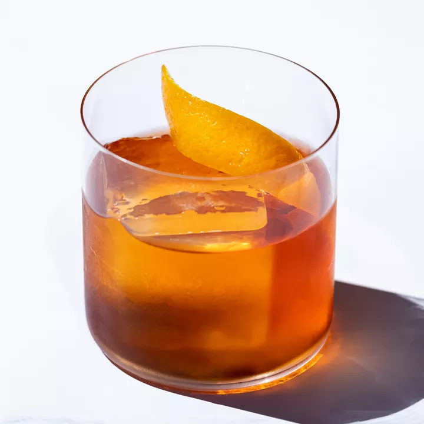
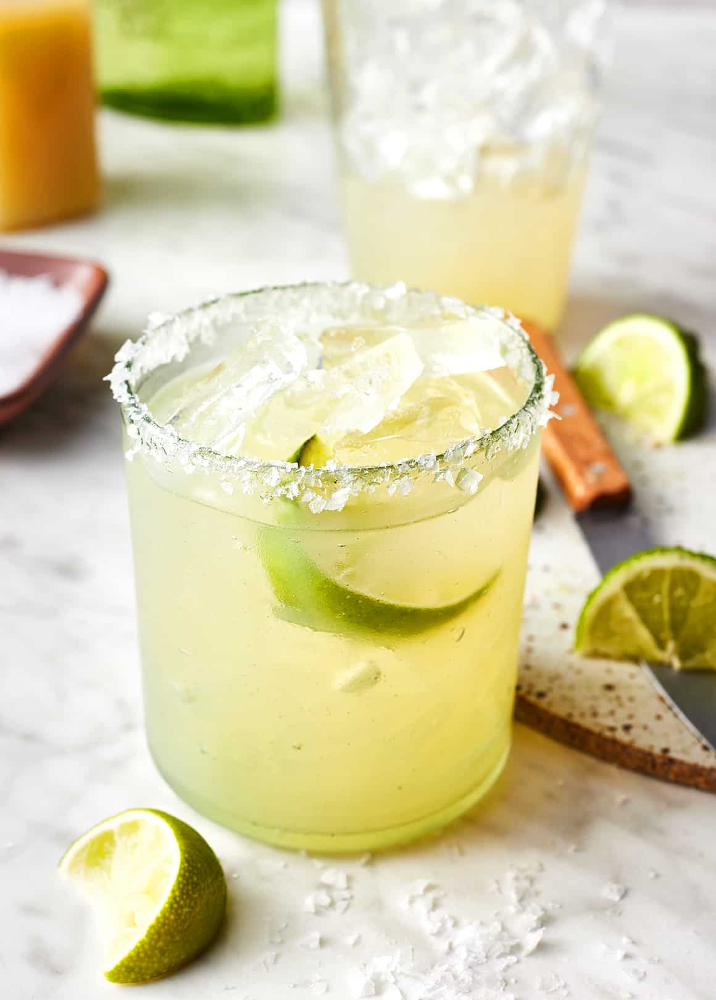
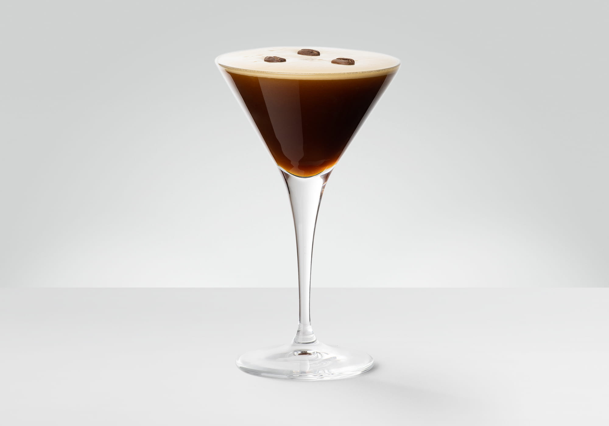

Signature Cocktail Recipes
Our Favorite Recipes

Classic Negroni
Ingredients
- 1 oz gin
- 1 oz Campari
- 1 oz sweet vermouth
- Orange peel for garnish
- Ice cubes
Instructions
- Combine gin, Campari, and sweet vermouth in a mixing glass with ice.
- Stir until well-chilled.
- Strain into a rocks glass over ice.
- Garnish with an orange peel.

Classic Margarita
Ingredients
- 2 oz tequila
- 1 oz fresh lime juice
- 1 oz Cointreau or Triple Sec
- Salt for rim (optional)
- Lime wheel for garnish
- Ice cubes
Instructions
- Rub the rim of a glass with a lime wedge and dip in salt (if desired).
- Combine tequila, lime juice, and Cointreau in a shaker with ice.
- Shake well until chilled.
- Strain into the prepared glass over fresh ice.
- Garnish with a lime wheel.
Moscow Mule
Ingredients
- 2 oz vodka
- 1/2 oz fresh lime juice
- 4-6 oz ginger beer
- Lime wedge for garnish
- Ice cubes
Instructions
- Fill a copper mug or glass with ice cubes.
- Add vodka and lime juice.
- Top with ginger beer and stir gently.
- Garnish with a lime wedge.

Classic Mojito
Ingredients
- 2 oz white rum
- 1 oz fresh lime juice
- 2 tsp sugar
- 6-8 fresh mint leaves
- Soda water
- Mint sprig and lime wheel for garnish
- Ice cubes
Instructions
- In a glass, muddle mint leaves with sugar and lime juice.
- Add rum and stir to dissolve sugar.
- Fill the glass with ice and top with soda water.
- Stir gently and garnish with a mint sprig and lime wheel.

Espresso Martini
Ingredients
- 1.5 oz vodka
- 1 oz freshly brewed espresso
- 0.5 oz coffee liqueur
- 0.5 oz simple syrup
- 3 coffee beans for garnish
- Ice cubes
Instructions
- Combine vodka, espresso, coffee liqueur, and simple syrup in a shaker with ice.
- Shake vigorously until well-chilled and frothy.
- Strain into a chilled martini glass.
- Garnish with three coffee beans.